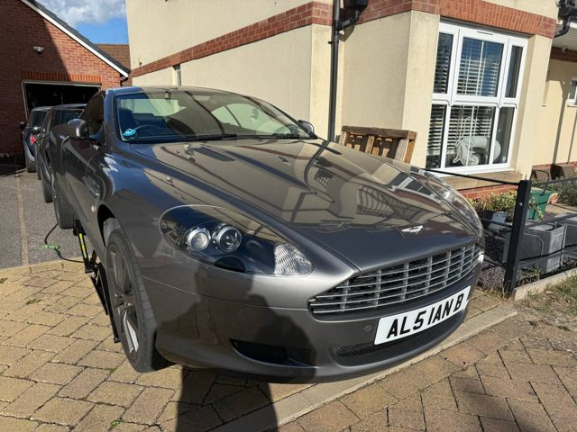

Differential oil change
Done ✓Graziano AM803D rear diff drained and refilled at 64,098 miles — very likely the first change in 17 years. 1.4 L came out; the strainer was clean and the drain-plug magnet carried only a light film of fine metallic paste, consistent with age and mileage — no chips or flakes. Refilled with just under 1.5 L to a slow drip from the fill hole. Strainer bolts 5 Nm; drain (14 mm hex) and fill (22 mm) plugs 49 Nm.
Why this oil. The factory fill is Shell Spirax S6 AXME/AXRME 75W-90 (API GL-5, MT-1), which is near-unobtainable in the UK. The non-negotiable is API GL-5: the AM803D is a hypoid crown wheel and pinion behind a 6.0 V12, and GL-5 carries roughly twice the extreme-pressure additive of GL-4. That ruled out the GL-4 / “GL4+” manual-gearbox oils (Castrol Transmax Manual Multivehicle, Liqui Moly 4434) despite their 75W-90 rating. Comma SX75W-90 GL-5 meets GL-5, sits very close to the factory oil on viscosity (104 / 16.5 cSt at 40 / 100 °C vs Shell’s 103 / 15), and was on the shelf at Halfords. It isn’t LS-rated, so it went in pre-mixed with Westway LSD friction modifier at 40 ml per litre — in line with Aston dealer practice, which adds LSD additive even to the factory oil.
Next time. The Comma is semi-synthetic and doesn’t carry MT-1, so this is a sound interim fill rather than the long-term answer. We’ll revisit in 12 months (October 2027) and will probably move to Motul Gear 300 LS 75W-90 — fully synthetic, GL-5, with the LS additive built in.


